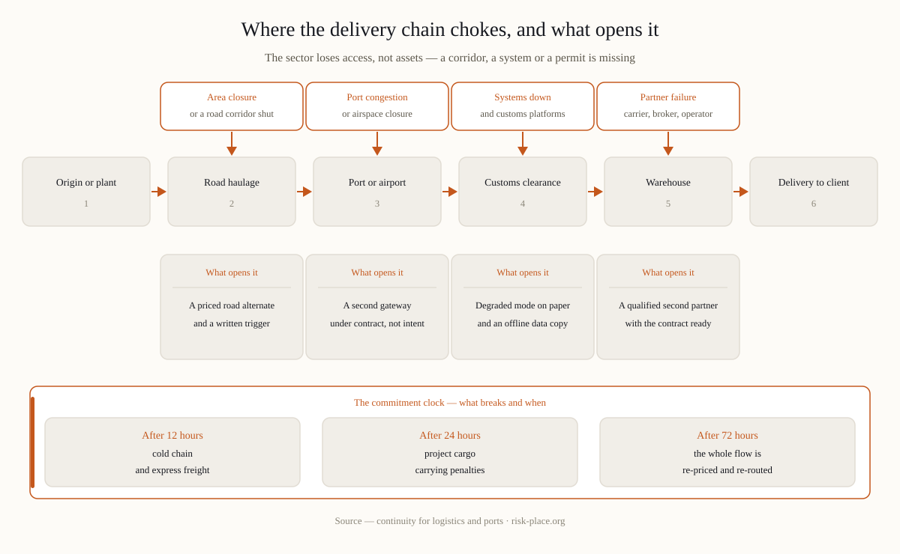

The four scenarios that define the sector
| Scenario | What actually stops | The continuity question |
|---|---|---|
| Airspace or area closure | Flights divert, a zone closes — cargo and crews are fine but elsewhere | Which commitments break at 12, 24, 72 hours, and what re-routes them? |
| Port congestion or closure | Vessels wait or divert; containers sit | Which alternate gateway, at what cost, triggered by whom? |
| Systems down (TMS/WMS, customs platforms, ransomware) | Bookings, tracking, customs filings freeze | Can you run degraded — paper manifests, phone confirmations — and for how long? |
| Key partner failure | A carrier, a customs broker, a warehouse operator stops | Who is the pre-agreed second source, and is the contract ready? |
Notice what is absent: total asset loss. Logistics disruptions are mostly access and information problems — the trucks exist, the cargo exists, but a corridor or a system does not. That is good news: access problems have workarounds if they are designed before the day.
What a logistics continuity plan actually contains
- Commitment triage. Not all shipments are equal: cold chain, project cargo with penalties, standard freight. The BIA ranks commitments by cost of delay per hour — that ranking drives every re-routing decision.
- Pre-designed alternates. Second gateway, second carrier, road-for-air substitutions — with costs and lead times computed in advance, because during the event nobody has time to price options.
- Degraded-mode operations. The paper-and-phone version of your booking, tracking and customs processes, tested at least once. The difference between «systems down» and «business down».
- Customer communication discipline. Clients forgive delay faster than silence: who calls the top twenty accounts, with what re-estimate, within which hour.
- First-hours authority. Re-routing costs money before it saves it. A named person must be able to commit spend at 3 a.m. without a committee.
Sector rule of thumb: the value of a logistics continuity plan is decided by the quality of its alternates. A plan whose alternate route was never priced, contracted or tested is a wish with a table of contents.

Regulatory and client context in the Gulf
Ports, airports and major logistics hubs sit inside the critical-infrastructure perimeter where NCEMA 7000 applies; large shippers and government-linked clients push continuity questionnaires down to their forwarders and 3PLs. If your clients include critical-infrastructure operators, expect your continuity arrangements to be evaluated as part of their compliance — the supplier-evaluation duty in the national standard reaches you by contract.
Frequently asked questions
What should we do first with a small planning budget?
The commitment triage and one pre-contracted alternate for your highest-penalty flow. Those two artefacts absorb most of the sector's realistic disruptions — and both fit in weeks, not months.
How do we plan for airspace disruptions specifically?
As an access scenario, not an aviation debate: define the trigger («zone closed, ETA slip beyond X hours»), the pre-priced road or sea alternate, and who authorises the switch. Regional operators have executed exactly this repeatedly in recent years — the mechanics are proven.
Our systems are cloud-based. Is ransomware still our scenario?
Yes — via your operators' endpoints, your integrations and your partners. Degraded-mode operations and an offline copy of critical operational data remain your responsibility even when the platform is someone else's.